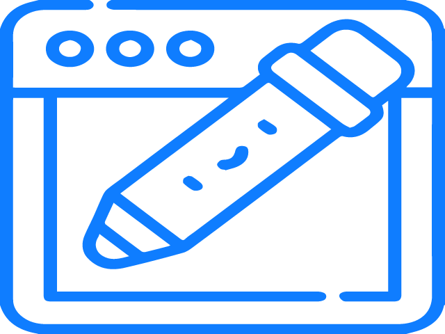

MUHAMMED NASSER EDDEN
FullStack Web Devoloper
I started working as a graphic designer and reached an acceptable level in it
Then I started working in the field of front-end design and now developing myself in the field of back-end
OBJECTIVE

UI UX DESIGN
I have good experience in Photoshop and Illustrator
And Miro for designing mockups and wireframes for application and website interfaces
With experience in picking colors

FRONT END
Dropping the mockup and the wireframe to create a website interface using the code and observing the rules UI & UX ,
Giving dynamics to the site using JavaScript to make it more interactive with the user
BACK END
Create, develop, and modify the website using a number of programming languages to suit the server environment
Create a custom database and link it with the binder
objective
UI UX DESIGN
I have good experience in Photoshop and Illustrator
And Miro for designing mockups and wireframes for application and website interfaces
With experience in picking colors
FRONT END
Dropping the mockup and the wireframe to create a website interface using the code and observing the rules UI & UX ,
Giving dynamics to the site using JavaScript to make it more interactive with the user
BACK END
Create, develop, and modify the website using a number of programming languages to suit the server environment
Create a custom database and link it with the binder